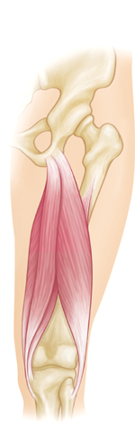
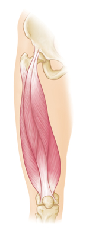

A muscle strain (muscle pull or tear) is a common injury, particularly among people who participate in sports.
The thigh has three sets of strong muscles: the hamstring muscles in the back of the thigh, the quadriceps muscles in the front, and the adductor muscles on the inside. The quadriceps muscles and hamstring muscles work together to straighten (extend) and bend (flex) the leg. The adductor muscles pull the legs together.
The hamstring and quadriceps muscle groups are particularly at risk for muscle strains because they cross both the hip and knee joints. They are also used for high-speed activities, such as track and field events (running, hurdles, long jump), football, basketball, and soccer.
|

Hamstring muscles at the back of the thigh.
|

Quadriceps muscles at the front of the thigh.
|
A person who experiences a muscle strain in the thigh will frequently describe a popping or snapping sensation as the muscle tears. Pain is sudden and may be severe. The area around the injury may be tender to the touch, with visible bruising if blood vessels are also broken.
Muscle strains usually happen when a muscle is stretched beyond its limit, tearing the muscle fibers. They frequently occur near the point where the muscle joins the tough, fibrous connective tissue of the tendon. A similar injury occurs if there is a direct blow to the muscle. Muscle strains in the thigh can be quite painful.
Once a muscle strain occurs, the muscle is vulnerable to reinjury; therefore, it is important to let the muscle heal properly and to follow preventive protocols.
Your physician will ask about the injury and examine your thigh for tenderness or bruising. You may be asked to bend or straighten your knee and/or hip so the doctor can confirm the diagnosis.
An x-ray may be needed if there is a possible fracture or other injury to the bone. Muscle strains are graded according to their severity. A grade 1 strain is mild and usually heals readily, whereas a grade 3 strain is a severe tear of the muscle that may take months to heal.
Most muscle strains can be treated with the RICE protocol. RICE stands for Rest, Ice, Compression, and Elevation.
- R est. Take a break from the activity that caused the strain. Your physician may recommend that you use crutches to avoid putting weight on the leg.
- I ce. Do not apply ice directly to the skin. Use cold packs for 20 minutes at a time, several times a day.
- C ompression. To prevent additional swelling and blood loss, wear an elastic compression bandage.
- E levation. To minimize swelling, keep your leg up higher than your heart.
Your doctor may recommend a non-steroidal anti-inflammatory, such as aspirin or another analgesic for pain relief. As the pain and swelling subside, physical therapy will help improve range of motion and strength. The muscle should be at full strength and pain-free before you return to sports. This will help prevent additional injury.
Several factors can predispose you to muscle strains, including:
- Muscle tightness. Tight muscles are vulnerable to strain. Athletes should follow a year-round program of daily stretching exercises.
- Muscle imbalance. Because the quadriceps and hamstring muscles work together, if one is stronger than the other, the weaker muscle can become strained.
- Poor conditioning. If your muscles are weak, they are less able to cope with the stress of exercise and are more likely to be injured.
- Muscle fatigue. Fatigue reduces the energy-absorbing capabilities of muscle, making them more susceptible to injury.
A proper warm-up is protective because it increases range of motion and reduces stiffness. You can take the following precautions to help prevent muscle strain:
- Warm up before any exercise session or sports activity, including practice. This will help increase your speed and endurance.
- Stretch slowly and gradually, holding each stretch to give the muscle time to respond and lengthen. You can find examples of stretching exercises on this website or ask your physician or coach for help in developing a routine.
- Condition your muscles with a regular program of exercises. You can ask your physician about exercise programs for people of your age and activity level.
- If you are injured, take the time needed to let the muscle heal before you return to sports. Wait until your muscle strength and flexibility return to preinjury levels. This can take 10 days to 3 weeks for a mild strain, and up to 6 months for a severe strain, such as a hamstring strain.